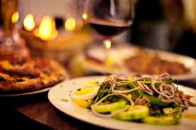

eten op het schip
Op onze cruise schip kunt u veel activiteiten tegen komen. U kunt ze allemaal doen zonder extra kosten.

Op het schip zijn er in totaal 5 plekken waar u kunt eten. Daarvan zijn er 3 restaurants: Hollandse restaurant, Aziatische restaurant en wereld restaurant. U kunt daarom heel erg genieten van het eten uit de hele wereld. Voor de mensen die niet zo erg houden van chique kleden hebben we ook nog een buffet. Dat bevindt zich helemaal boven in de deck. Daar hebben we ook heel veel verschillende soorten gerechten en toetjes. Het heeft een prachtige uitzicht op de zee en de buffet is 24/7 open.
Op de basketveld kunnen kinderen en volwassenen even sporten en spelen. U kunt dar veel mensen tegen komen en nieuwe mensen leren kennen.
Voor het ontbijt kunt u naar de restaurant of naar de buffet. In onze restaurant kunt u kiezen uit een paar soorten ontbijt. Elke dag hebben we andere menu kaart met hele andere ontbijt voor u klaar. Ook in de buffet kunt u ontbijten. Hier hebben we heel veel verschillende soorten ontbijt. Ook kunt u dan lunch pakket laten maken wanneer u op stap gaat. Dat kunt u doorgeven aan een van onze koks. Dan maken ze voor u klaar.
Voor de lunch hebben we alleen de buffet open staan. Daar hebben we elke dag andere gerechten staan. Ook als u op stap gaat, kunt u een lunch pakket laten maken. Als u aan een van onze koks doorgeeft, dan maken ze voor u klaar.
Voor het diner hebben we 3 restaurants open staan. Aziatische restaurant, Hollandse restaurant en de wereld restaunt. 1 keer in de hele reis hebben we een speciale avond waar iedereen chique gekleed kunnen komen. Iedereen krijgt dan een dresscode. Als u dat niet wilt, kunt u natuurlijk naar de buffet gaan waar wij ook heel veel lekkere eten hebben.